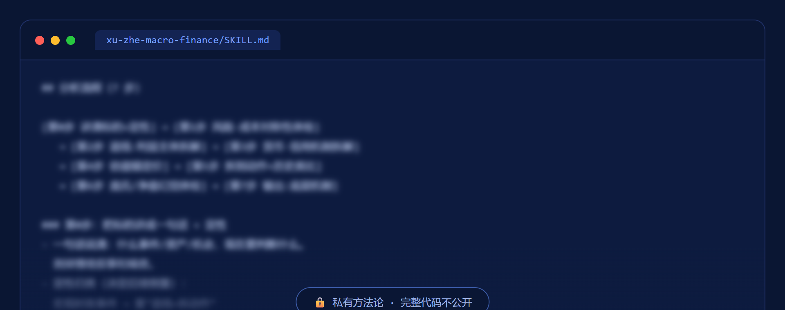

用基金经理级的宏观+衍生品视角，拆解政策与资产估值的底层机制，先做风险-收益对称性体检，再给出机制判断。
这套流水线在做什么、怎么守规矩。
不先问"能赚多少"，先问"如果错了亏多少、如果对了赚多少，两者对称吗"——非对称机会才值得做。
拆利益主体（谁埋单谁获益）→ 拆货币信用机制 → 用估值锚（利率倒数/DCF/盯市）定价 → 拆到"动作"层找历史类比 → 识别庞氏与账面净值幻觉。
遇到把握不住的专业细分，明说不懂、给方向不给结论；每次产出结尾必须声明这是机制推演，不是投资建议。
这是我的私有方法论资产，只展示模糊的一小段代码证明真实存在，完整逻辑不公开。
